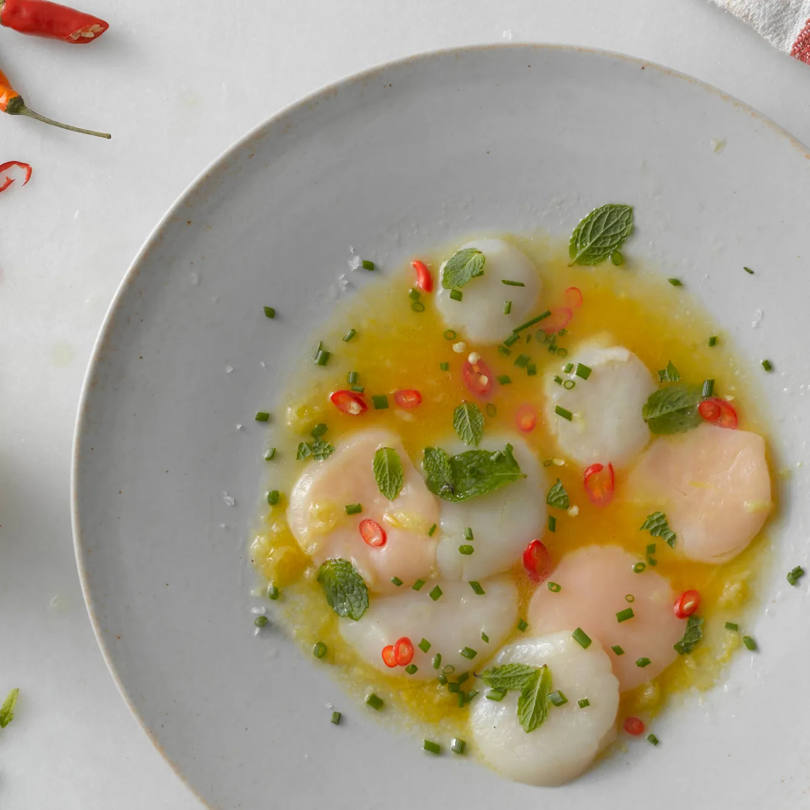

Scallop Crudo Recipe
Scallop Crudo

Scallop crudo is a no-cook dish with a bright citrus flavor.
Elegant enough to impress dinner guests yet simple enough to make for
yourself.
Ingredients:
- 1/4 cup fresh orange juice
- 3 tablespoons fresh lemon juice
- 2 tablespoons soy sauce, preferably organic
- 1 tablespoon finely grated peeled fresh ginger
- 1 tablespoon plus 2 teaspoons sunflower oil
- 1 red Thai chile, thinly sliced
- 3/4 teaspoon Sherry vinegar
- 1/2 pound large sea scallops, side muscle removed, thinly sliced crosswise
- 1/4 cup fresh mint leaves, torn if large
- 2 tablespoons thinly sliced chives
- Sea salt
Directions:
- Whisk orange juice, lemon juice, soy sauce, oil, ginger,
chile, and vinegar in a small bowl.
- Pour dressing onto 4 large rimmed plates.
- Arrange scalops over plates.
- Garnish with mint and chives.
- Season lightly with salt.